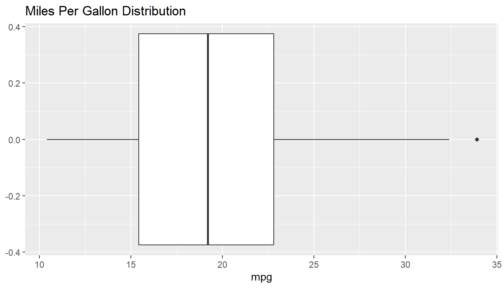
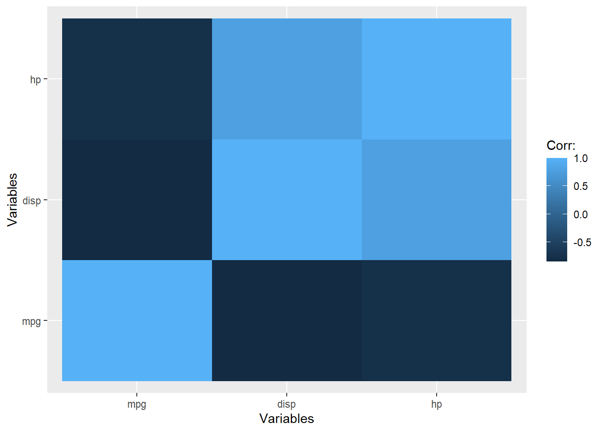
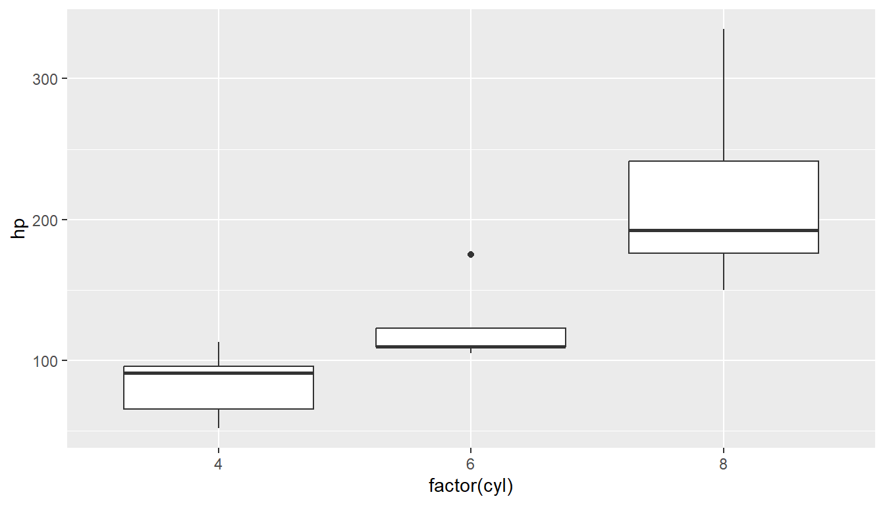

R
library(dplyr)
library(ggplot2)Exploratory Data Analysis (EDA) is a critical step in understanding a dataset, identifying patterns, spotting anomalies, testing hypotheses, and checking assumptions.
R
library(dplyr)
library(ggplot2)R
glimpse(mtcars)Rows: 32
Columns: 11
$ mpg <dbl> 21.0, 21.0, 22.8, 21.4, 18.7, 18.1, 14.3, 24.4, 22.8, 19.2, 17.8,…
$ cyl <dbl> 6, 6, 4, 6, 8, 6, 8, 4, 4, 6, 6, 8, 8, 8, 8, 8, 8, 4, 4, 4, 4, 8,…
$ disp <dbl> 160.0, 160.0, 108.0, 258.0, 360.0, 225.0, 360.0, 146.7, 140.8, 16…
$ hp <dbl> 110, 110, 93, 110, 175, 105, 245, 62, 95, 123, 123, 180, 180, 180…
$ drat <dbl> 3.90, 3.90, 3.85, 3.08, 3.15, 2.76, 3.21, 3.69, 3.92, 3.92, 3.92,…
$ wt <dbl> 2.620, 2.875, 2.320, 3.215, 3.440, 3.460, 3.570, 3.190, 3.150, 3.…
$ qsec <dbl> 16.46, 17.02, 18.61, 19.44, 17.02, 20.22, 15.84, 20.00, 22.90, 18…
$ vs <dbl> 0, 0, 1, 1, 0, 1, 0, 1, 1, 1, 1, 0, 0, 0, 0, 0, 0, 1, 1, 1, 1, 0,…
$ am <dbl> 1, 1, 1, 0, 0, 0, 0, 0, 0, 0, 0, 0, 0, 0, 0, 0, 0, 1, 1, 1, 0, 0,…
$ gear <dbl> 4, 4, 4, 3, 3, 3, 3, 4, 4, 4, 4, 3, 3, 3, 3, 3, 3, 4, 4, 4, 3, 3,…
$ carb <dbl> 4, 4, 1, 1, 2, 1, 4, 2, 2, 4, 4, 3, 3, 3, 4, 4, 4, 1, 2, 1, 1, 2,…R
slice_head(mtcars) mpg cyl disp hp drat wt qsec vs am gear carb
Mazda RX4 21 6 160 110 3.9 2.62 16.46 0 1 4 4R
slice_tail(mtcars) mpg cyl disp hp drat wt qsec vs am gear carb
Volvo 142E 21.4 4 121 109 4.11 2.78 18.6 1 1 4 2R
slice_sample(mtcars, n = 10) mpg cyl disp hp drat wt qsec vs am gear carb
Merc 450SE 16.4 8 275.8 180 3.07 4.070 17.40 0 0 3 3
Merc 450SLC 15.2 8 275.8 180 3.07 3.780 18.00 0 0 3 3
Lotus Europa 30.4 4 95.1 113 3.77 1.513 16.90 1 1 5 2
Porsche 914-2 26.0 4 120.3 91 4.43 2.140 16.70 0 1 5 2
Cadillac Fleetwood 10.4 8 472.0 205 2.93 5.250 17.98 0 0 3 4
Merc 280 19.2 6 167.6 123 3.92 3.440 18.30 1 0 4 4
Camaro Z28 13.3 8 350.0 245 3.73 3.840 15.41 0 0 3 4
Datsun 710 22.8 4 108.0 93 3.85 2.320 18.61 1 1 4 1
Toyota Corona 21.5 4 120.1 97 3.70 2.465 20.01 1 0 3 1
Fiat X1-9 27.3 4 79.0 66 4.08 1.935 18.90 1 1 4 1R
str(mtcars)'data.frame': 32 obs. of 11 variables:
$ mpg : num 21 21 22.8 21.4 18.7 18.1 14.3 24.4 22.8 19.2 ...
$ cyl : num 6 6 4 6 8 6 8 4 4 6 ...
$ disp: num 160 160 108 258 360 ...
$ hp : num 110 110 93 110 175 105 245 62 95 123 ...
$ drat: num 3.9 3.9 3.85 3.08 3.15 2.76 3.21 3.69 3.92 3.92 ...
$ wt : num 2.62 2.88 2.32 3.21 3.44 ...
$ qsec: num 16.5 17 18.6 19.4 17 ...
$ vs : num 0 0 1 1 0 1 0 1 1 1 ...
$ am : num 1 1 1 0 0 0 0 0 0 0 ...
$ gear: num 4 4 4 3 3 3 3 4 4 4 ...
$ carb: num 4 4 1 1 2 1 4 2 2 4 ...R
head(mtcars) mpg cyl disp hp drat wt qsec vs am gear carb
Mazda RX4 21.0 6 160 110 3.90 2.620 16.46 0 1 4 4
Mazda RX4 Wag 21.0 6 160 110 3.90 2.875 17.02 0 1 4 4
Datsun 710 22.8 4 108 93 3.85 2.320 18.61 1 1 4 1
Hornet 4 Drive 21.4 6 258 110 3.08 3.215 19.44 1 0 3 1
Hornet Sportabout 18.7 8 360 175 3.15 3.440 17.02 0 0 3 2
Valiant 18.1 6 225 105 2.76 3.460 20.22 1 0 3 1R
tail(mtcars) mpg cyl disp hp drat wt qsec vs am gear carb
Porsche 914-2 26.0 4 120.3 91 4.43 2.140 16.7 0 1 5 2
Lotus Europa 30.4 4 95.1 113 3.77 1.513 16.9 1 1 5 2
Ford Pantera L 15.8 8 351.0 264 4.22 3.170 14.5 0 1 5 4
Ferrari Dino 19.7 6 145.0 175 3.62 2.770 15.5 0 1 5 6
Maserati Bora 15.0 8 301.0 335 3.54 3.570 14.6 0 1 5 8
Volvo 142E 21.4 4 121.0 109 4.11 2.780 18.6 1 1 4 2Each column in a data frame can contain different types of data (e.g., integers, floats, characters). Understanding these types is essential for performing appropriate operations on the data. To ensure that each column has the correct data type (numeric, factor, date, etc.).
R
sapply(mtcars, \(x) class(x)) mpg cyl disp hp drat wt qsec vs
"numeric" "numeric" "numeric" "numeric" "numeric" "numeric" "numeric" "numeric"
am gear carb
"numeric" "numeric" "numeric" To analyze how much of the data is missing and in which columns. Checking for missing values early helps in planning how to handle them later in analysis or modeling processes.
R
colSums(is.na(mtcars)) mpg cyl disp hp drat wt qsec vs am gear carb
0 0 0 0 0 0 0 0 0 0 0
Summary statistics: Calculate mean, median, variance, standard deviation, and quantiles
R
mtcars |>
select(where(is.numeric)) |>
summary() mpg cyl disp hp
Min. :10.40 Min. :4.000 Min. : 71.1 Min. : 52.0
1st Qu.:15.43 1st Qu.:4.000 1st Qu.:120.8 1st Qu.: 96.5
Median :19.20 Median :6.000 Median :196.3 Median :123.0
Mean :20.09 Mean :6.188 Mean :230.7 Mean :146.7
3rd Qu.:22.80 3rd Qu.:8.000 3rd Qu.:326.0 3rd Qu.:180.0
Max. :33.90 Max. :8.000 Max. :472.0 Max. :335.0
drat wt qsec vs
Min. :2.760 Min. :1.513 Min. :14.50 Min. :0.0000
1st Qu.:3.080 1st Qu.:2.581 1st Qu.:16.89 1st Qu.:0.0000
Median :3.695 Median :3.325 Median :17.71 Median :0.0000
Mean :3.597 Mean :3.217 Mean :17.85 Mean :0.4375
3rd Qu.:3.920 3rd Qu.:3.610 3rd Qu.:18.90 3rd Qu.:1.0000
Max. :4.930 Max. :5.424 Max. :22.90 Max. :1.0000
am gear carb
Min. :0.0000 Min. :3.000 Min. :1.000
1st Qu.:0.0000 1st Qu.:3.000 1st Qu.:2.000
Median :0.0000 Median :4.000 Median :2.000
Mean :0.4062 Mean :3.688 Mean :2.812
3rd Qu.:1.0000 3rd Qu.:4.000 3rd Qu.:4.000
Max. :1.0000 Max. :5.000 Max. :8.000 R
mtcars |>
summarise(
minimum = min(mpg, na.rm = TRUE),
quantile_25 = quantile(mpg, 0.25),
mean = mean(mpg, na.rm = TRUE),
median = median(mpg, na.rm = TRUE),
variance = var(mpg, na.rm = TRUE),
standard_deviation = sd(mpg, na.rm = TRUE),
quantile_75 = quantile(mpg, 0.75),
maximum = max(mpg, na.rm = TRUE)
) minimum quantile_25 mean median variance standard_deviation quantile_75
1 10.4 15.425 20.09062 19.2 36.3241 6.026948 22.8
maximum
1 33.9Visualizing the distribution of a numeric variable is a fundamental step in data analysis, and two common methods for achieving this are histograms and box plots. Each method provides unique insights into the data, helping analysts understand its characteristics and make informed decisions.
R
mtcars |>
ggplot(aes(x = mpg)) +
geom_histogram(binwidth = 5, color = "white") +
ggtitle("Distribution of Miles Per Gallon")R
mtcars |>
ggplot(aes(x = mpg)) +
geom_boxplot() +
ggtitle("Miles Per Gallon Distribution")
Retrieve the number of each category appeared in the data.
R
count(mtcars, cyl, sort = TRUE, name = "count") cyl count
1 8 14
2 4 11
3 6 7R
table(mtcars$cyl)
4 6 8
11 7 14 R
mtcars |>
count(cyl) |>
ggplot(aes(x = cyl, y = n)) +
geom_col() +
labs(
x = "cylinders",
y = "Count",
title = "Count of record by Number of Cylinders"
)
Bivariate analysis examines the relationship between two variables.
performing a correlation analysis and creating a scatter plot are fundamental when analyzing the relationship between two continuous variables
Correlation analysis quantifies the strength and direction of the linear relationship between two continuous variables.
R
cor(mtcars$mpg, mtcars$disp) [1] -0.8475514A scatter plot visually represents the relationship between two continuous variables by plotting individual data points on a Cartesian plane.
R
mtcars |>
ggplot(aes(x = mpg, y = disp)) +
geom_point() +
labs(x = "Miles per Gallon", y = "Displacement")R
mtcars |>
group_by(cyl) |>
summarise(
minimum = min(mpg),
mean = mean(mpg),
median = median(mpg),
maximum = mean(mpg)
)# A tibble: 3 × 5
cyl minimum mean median maximum
<dbl> <dbl> <dbl> <dbl> <dbl>
1 4 21.4 26.7 26 26.7
2 6 17.8 19.7 19.7 19.7
3 8 10.4 15.1 15.2 15.1R
mtcars |>
group_by(cyl) |>
summarise(avg_mpg = mean(mpg)) |>
ggplot(aes(x = cyl, y = avg_mpg)) +
geom_col() Compare distributions of a numeric variable across a categorical variable.
R
mtcars |>
ggplot(aes(x = factor(cyl), y = mpg)) +
geom_boxplot()Show the distribution and density of the numeric variable across categories.
R
mtcars |>
ggplot(aes(x = factor(cyl), y = mpg)) +
geom_violin()Show the frequency of combinations of two categorical variables.
R
table(mpg$drv, mpg$fl)drv and fl
c d e p r
4 0 2 6 20 75
f 1 3 1 25 76
r 0 0 1 7 17A Chi-square test is used to test for independence between two categorical variables
R
table(mpg$drv, mpg$fl) |>
chisq.test()Warning in chisq.test(table(mpg$drv, mpg$fl)): Chi-squared approximation may be
incorrect
Pearson's Chi-squared test
data: table(mpg$drv, mpg$fl)
X-squared = 6.5618, df = 8, p-value = 0.5846
Visualize pairwise relationships between multiple numeric variables.
R
mtcars |>
select(mpg, disp, hp) |>
GGally::ggpairs()Registered S3 method overwritten by 'GGally':
method from
+.gg ggplot2Warning in geom_point(): All aesthetics have length 1, but the data has 9 rows.
ℹ Did you mean to use `annotate()`?Display the correlation matrix between numeric variables.
R
mtcars |>
select(mpg, disp, hp) |>
cor() |>
reshape2::melt() |>
ggplot(aes(Var1, Var2, fill = value)) +
geom_tile() +
labs(
x = "Variables",
y = "Variables",
fill = "Corr:"
)
Reduce the dimensionality of a dataset while retaining most of the variance.
R
mtcars |>
select(mpg, disp, hp, qsec, wt, drat) |>
prcomp(scale. = TRUE)Standard deviations (1, .., p=6):
[1] 2.0463129 1.0714999 0.5773705 0.3928874 0.3532648 0.2279872
Rotation (n x k) = (6 x 6):
PC1 PC2 PC3 PC4 PC5 PC6
mpg -0.4586835 -0.05867609 0.19479235 0.78205878 0.1111533 -0.35249327
disp 0.4660354 0.06065296 -0.09688406 0.60001871 -0.2946297 0.56825752
hp 0.4258534 -0.36147576 -0.14613554 0.12301873 0.8057408 -0.04771555
qsec -0.2528320 0.76284877 -0.34059066 0.04268124 0.4218755 0.24152663
wt 0.4386179 0.29953457 -0.41776208 0.10438337 -0.2301541 -0.69246040
drat -0.3670963 -0.43652537 -0.80049152 0.02259258 -0.1437714 0.11277675Group similar observations into clusters.
R
clus <- iris |>
select(where(is.numeric)) |>
kmeans(centers = 3)R
iris |>
ggplot(
aes(
x = Sepal.Length,
y = Petal.Length,
color = as.factor(clus$cluster)
)
) +
geom_point() +
labs(
x = "Sepal length",
y = "petal length",
color = "Clusters"
)
Outliers are typically represented as points outside the whiskers of a boxplot.
R
mtcars |>
ggplot(aes(x = factor(cyl), y = hp)) +
geom_boxplot()
Outliers can also be detected using the IQR method.
R
Q1 <- quantile(mtcars$mpg, 0.25)
Q3 <- quantile(mtcars$mpg, 0.75)
IQR <- Q3 - Q1
lower_bound <- Q1 - 1.5*IQR
upper_bound <- Q3 + 1.5*IQR
mtcars |>
filter(mpg < lower_bound | mpg > upper_bound) mpg cyl disp hp drat wt qsec vs am gear carb
Toyota Corolla 33.9 4 71.1 65 4.22 1.835 19.9 1 1 4 1Calculate Z-scores to identify observations that are more than 3 standard deviations away from the mean.
R
as_tibble(mtcars) |>
mutate(z_score = (mpg - mean(mpg)) / sd(mpg)) |>
filter(abs(z_score) > 3)# A tibble: 0 × 12
# ℹ 12 variables: mpg <dbl>, cyl <dbl>, disp <dbl>, hp <dbl>, drat <dbl>,
# wt <dbl>, qsec <dbl>, vs <dbl>, am <dbl>, gear <dbl>, carb <dbl>,
# z_score <dbl>
Identify which columns have missing data and how much is missing.
R
mice::md.pattern(mtcars) /\ /\
{ `---' }
{ O O }
==> V <== No need for mice. This data set is completely observed.
\ \|/ /
`-----' mpg cyl disp hp drat wt qsec vs am gear carb
32 1 1 1 1 1 1 1 1 1 1 1 0
0 0 0 0 0 0 0 0 0 0 0 0
The skimr package is one of the numerous packages in R that allows you to create a general summary of the entire data set using descriptive analysis.
R
install.packages(skimr)
library(skimr)R
skim(iris)skim() function from the skimr package.
| Name | iris |
| Number of rows | 150 |
| Number of columns | 5 |
| _______________________ | |
| Column type frequency: | |
| factor | 1 |
| numeric | 4 |
| ________________________ | |
| Group variables | None |
Variable type: factor
| skim_variable | n_missing | complete_rate | ordered | n_unique | top_counts |
|---|---|---|---|---|---|
| Species | 0 | 1 | FALSE | 3 | set: 50, ver: 50, vir: 50 |
Variable type: numeric
| skim_variable | n_missing | complete_rate | mean | sd | p0 | p25 | p50 | p75 | p100 | hist |
|---|---|---|---|---|---|---|---|---|---|---|
| Sepal.Length | 0 | 1 | 5.84 | 0.83 | 4.3 | 5.1 | 5.80 | 6.4 | 7.9 | ▆▇▇▅▂ |
| Sepal.Width | 0 | 1 | 3.06 | 0.44 | 2.0 | 2.8 | 3.00 | 3.3 | 4.4 | ▁▆▇▂▁ |
| Petal.Length | 0 | 1 | 3.76 | 1.77 | 1.0 | 1.6 | 4.35 | 5.1 | 6.9 | ▇▁▆▇▂ |
| Petal.Width | 0 | 1 | 1.20 | 0.76 | 0.1 | 0.3 | 1.30 | 1.8 | 2.5 | ▇▁▇▅▃ |